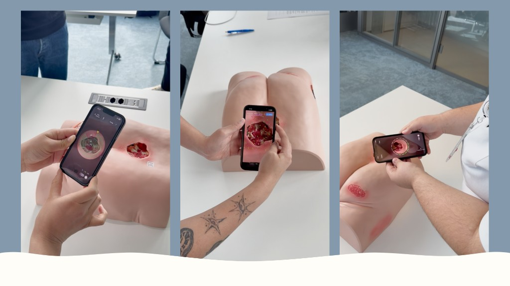

3D scan for
wound documentation
Executive Summary
As part of my MAS in Human Computer Interaction Design (OST), I developed new guidance for the 3D wound scanning process together with a practice partner and two classmates.
We conducted qualitative user research, developed several interaction concepts, and validated them iteratively with nursing professionals.
The final prototype achieved a SUS-Score von 77.81 (n = 16).
My role:
- UX Research
- UX Design
- Requirements engineering
My tasks:
- Planning and conducting qualitative user research
- Concept and prototyping in 3D space
- Running and analyzing usability tests
- Analysis of SUS results
- Handoff of the concept to the design and development team
Methods used:
DISCOVER
Context and problem definition
Existing 3D scan apps are designed to walk around objects completely. That is not possible for wounds because they are concave. Smartphone movement and guidance requirements therefore differ fundamentally from existing solutions.
EXPLORE & TEST
Research question
How can guidance be designed to help users perform 3D wound documentation independently and reliably?
EXPLORE & TEST
Methodological approach
Because interactions in 3D space are hard to prototype in Figma, we developed initial concepts in ProtoPie and then implemented them with Cursor and Xcode as working iOS prototypes.
Each iteration was tested with nursing professionals and continuously improved based on findings.

Measurable product success
The final prototype with our guidance concept achieved a SUS-Score von 77.81, while the prototype using only Apple Object Capture guidance scored 33.5 on the SUS.